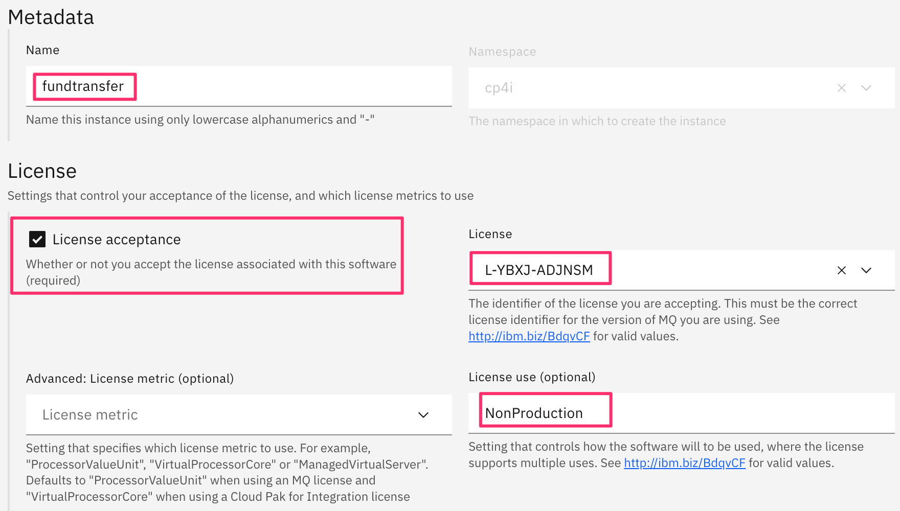

MQ Setup
A Native HA configuration provides a highly available queue manager where the recoverable MQ data (for example, the messages) are replicated across multiple sets of storage, preventing loss from storage failures. The queue manager consists of multiple running instances, one is the leader, the others are ready to quickly take over in the event of a failure, maximizing access to the queue manager and its messages.

We will now setup and configure MQ queue manager and queues.
The ConfigMap API object holds key-value pairs of configuration data that can be consumed in pods or used to store configuration data for system components such as controllers. ConfigMap is similar to secrets, but designed to more conveniently support working with strings that do not contain sensitive information. Let us configure the config map.
- Go to ocp console -> Workloads -> ConfigMaps
- We are working on the project “cp4i”. Click create ConfigMap
- Use the following options for the setup and click “Create”
- ConfigMap is successfully created in namespace “cp4i”


| Option | Value |
|---|---|
| Configure via | Form view |
| Name | nativehamqsc |
| Key | nativehamqsc.mqsc |
| Value | define ql(transfer.request) DEFPSIST(YES) define ql(transfer.reply) DEFPSIST(YES) DEFINE CHANNEL(FUNDTRANSFERCHL) CHLTYPE(SVRCONN) TRPTYPE(TCP) SSLCAUTH(OPTIONAL) SSLCIPH('ANY_TLS12_OR_HIGHER') set chlauth(FUNDTRANSFERCHL) TYPE(BLOCKUSER) USERLIST(NOBODY) REFRESH SECURITY TYPE(CONNAUTH) |


Now we will create the license key used for IBM MQ
- Go to ocp console -> Workloads -> Secrets -> Click Create -> From YAML
- There are many ways to create configurations, one way is through yaml. Copy the yaml content given here and paste in the ocp console. Click "Create"
- Secret key is successfully created in the namespace cp4i
- Go to the environment details page -> “Cloud Pak Console’ -> copy and paste “login info for the CP4I Navigator console” in a text editor. You will need this information throughout this lab.
- Login to CP4I Navigator console. Log in with “IBM provided credentials (admin only)”. Use the credentials given in the environment details
- From the welcome screen -> click Integration Instances
- Click “Create Instance”
- Click “Messaging” -> Next
- Click “Production (Custom)” -> Next
- Follow the following configurations:
- UI Form is chosen by default. Enable advanced settings
- Name the queue manager as “fundtransfer”. Follow the options highlighted in red for licence configuration 
- PKI configuration – follow the highlighted configurations
- Choose Native HA for queue manager availability
- Follow the red highlighted parts for config map configuration
- Storage class configuration
- Storage for queue manager and recovery logs
- Configuration for security context
- Configuration for version and web
- Now click create for queue manager creation.
- It would take 5 to 10 mins for the queue manager to be active
- Go to ocp console -> Networking -> Route -> Create Route. Use the project cp4i
- Create a route using the yaml given below and then click create

kind: Secret
apiVersion: v1
metadata:
name: nativehacert
namespace: cp4i
data:
tls.crt: LS0tLS1CRUdJTiBDRVJUSUZJQ0FURS0tLS0tCk1JSURDVENDQWZHZ0F3SUJBZ0lVR0tiaE5ZWXJMZVdqUFBVTlp5RldJTjJQWExRd0RRWUpLb1pJaHZjTkFRRUwKQlFBd0ZERVNNQkFHQTFVRUF3d0piRzlqWVd4b2IzTjBNQjRYRFRJd01ERXdOakV3TURjeU4xb1hEVE13TURFdwpNekV3TURjeU4xb3dGREVTTUJBR0ExVUVBd3dKYkc5allXeG9iM04wTUlJQklqQU5CZ2txaGtpRzl3MEJBUUVGCkFBT0NBUThBTUlJQkNnS0NBUUVBem5EbkpGaHhFMGRMTFdhOUZZQlBvakZNdWVSL1pESXJZTEE0OGFWYVNNYU8KRjhNT0o0RGpHQWJ1L0UwbjlIR3JxSXI5bnRSc29SZkhjMFdhcExDcFdwdXdnWlBFSXVXR25MS2xjdVJtYnRVVApUUlkvQkhITEtrVUFncnlCUXVqZFh2RFRobnltYXZCUGpLM1QxZlZFMGNFT1lHQTlHanJYU0IzT2hQR1pHQmxOCmM5NXppZEZSOVZyWHQwRFJDVkFrNjRmYlRoa3V2SDh1TkV1VGFodlVFOVJIZmRzajJzZU81S0k3bmdYMG1IUUIKcUlMdVAzcGEreU1WNUc4TlBaalN4U0IwQjNlS3YraUNjV2hSdTZSRmIyZmNmZXpnbm1TcFJYVTUwS1lxV1piZApvc0czaFFxU1JRUTJZUmR5NzZaMGJKb3FGM3N0aGJJaTZ5TmYvTVQ5ZndJREFRQUJvMU13VVRBZEJnTlZIUTRFCkZnUVVIQlBGY0FyTy9ZUmxiZ0tobmkxSVdnS0Z5VEF3SHdZRFZSMGpCQmd3Rm9BVUhCUEZjQXJPL1lSbGJnS2gKbmkxSVdnS0Z5VEF3RHdZRFZSMFRBUUgvQkFVd0F3RUIvekFOQmdrcWhraUc5dzBCQVFzRkFBT0NBUUVBWkZ6SQpaLzZOay9TQmY0WXJHdVdNSzVjTTRLdldjWUdXQWlndTZ1TzZvV2VUVmdYamtGbE9GZ2RHRVhpSjFZNi9mRFBCCitaMVE0SERMYm1hbGE1aXRqeVhXbWFsRTFFOHR2bThGMDA5ZEFPL0oxUmNyS1VZcUFKbGJQNTZtbmt1QmtqZE0KYzAyMkhXOTd0RUpkYXViTlF2ZWJraDhZK1loUGVkV242ZmFtMVM1S2cwYUlVUWRKd0FuZDlCb2hLVkk3SHFFZgpoUktDYmJFZzNySXlSS0FLdk5DRXlvMjY4b3VIcll3Mi9WMEhMU0VnWEU3UTFxWTVKaXF6Y3Iyb0EvU2xZdGZwCnZYZFhKajA3OGJ1N3hrS2FxZkxpN3FTSzdjSVRjWjNWcldGOWZCbEh5MVV1K2V1NVNhN29udFR2MktON2Joc1QKNGczVTlMdWR2L01xTE5EWDVnPT0KLS0tLS1FTkQgQ0VSVElGSUNBVEUtLS0tLQo=
tls.key: LS0tLS1CRUdJTiBQUklWQVRFIEtFWS0tLS0tCk1JSUV2UUlCQURBTkJna3Foa2lHOXcwQkFRRUZBQVNDQktjd2dnU2pBZ0VBQW9JQkFRRE9jT2NrV0hFVFIwc3QKWnIwVmdFK2lNVXk1NUg5a01pdGdzRGp4cFZwSXhvNFh3dzRuZ09NWUJ1NzhUU2YwY2F1b2l2MmUxR3loRjhkegpSWnFrc0tsYW03Q0JrOFFpNVlhY3NxVnk1R1p1MVJOTkZqOEVjY3NxUlFDQ3ZJRkM2TjFlOE5PR2ZLWnE4RStNCnJkUFY5VVRSd1E1Z1lEMGFPdGRJSGM2RThaa1lHVTF6M25PSjBWSDFXdGUzUU5FSlVDVHJoOXRPR1M2OGZ5NDAKUzVOcUc5UVQxRWQ5MnlQYXg0N2tvanVlQmZTWWRBR29ndTQvZWxyN0l4WGtidzA5bU5MRklIUUhkNHEvNklKeAphRkc3cEVWdlo5eDk3T0NlWktsRmRUblFwaXBabHQyaXdiZUZDcEpGQkRaaEYzTHZwblJzbWlvWGV5MkZzaUxyCkkxLzh4UDEvQWdNQkFBRUNnZ0VBQ0czcndqd3FRZE5EYXBNclhWbGo1d2VFVG9MYUFNbGJwQk1PQUMvMFE4eDMKdU5pcUYwclgrdjh0ZXZmYmpjdW1hcmRpSzc0WXdXc3JKYlhOM3JPbjlwOHMwZDJxd0pJR3NSZEtVaXFwVkJVMwpPSXFVQUNaMVdVQ0FDTmFSb0ozSmpEcmhLRGltd3U4VkVIVjRsTi95ODIyaW5LVFJXZVRWTFlpcUNodWpXS3g5CkNvUU9qeFpkZFFxV0xNbEtndFRQOGUxSTI2MmNUbVhzVzhhSWQ4dDVpWUZmcFc2OHpLTzZqSmRVWktpdnE2MkcKc3hqYnF5Kzk1SitqbzBLeWUybzN0M2NFempJUEk4L1hhRmllTlFFTUZtRWVlVzVSNE1iZ3VNblpocTBVV1BzSwpWdHE0Ukp2OW02aC9RWGlqMGVCY281Rnp2MFB5RHZtUFkrZWUwT1plQVFLQmdRRHBQUm9wanpMYjhFRnUzcnU2Cktyc1BNYzUvbUc4S1pmY0NGejdjSHRQdTJEQzZxTytpRXhkVk5xZ2h6ZGtLK05kalFGUGNmdlRQZXhCOWhsWUEKN0NtOE1QRkxSNUhNditFL3BSQm5UNzVLZHdhT2NjT21ibFNGSE1LSjhJVXZld3daaERhQWFFWlNmQld0TU9GdwpKa0FrTDdMTWxkL0Ixbk9LaDM5YmR1ZEpRUUtCZ1FEaWxsT3ZGVkVjaUxyM28yR1JzUnhIK1lMQkJjbUZpSEo2CngzQ1JNQjRPMldZMjJPYXpsZVJZUXdqdU1PS2xGNmNiR0VBR1JKaVRIbGo2MFE0cXVwbERrbVJTdWVJcnBRMTEKU3A1MnMranY3WXpZdFpxUG00UzFtaG9xcU1iRDg2V2VEZnp6RUIweWJPUk8xZW04NXRqZStoN3FvN0Y5QWUrSwplU29TUDduV3Z3S0JnQUpTQlV5Y2pCajhEdXFYZEs2cGRpcjBoK1ZsRXRXN3BmVnpYY0M2M2NqbWhiV1ZzS3lnCkcvOVJCK011TlJhUzJ6RzFsaC8vYzFnTkZXRHFVVGk1SU1FcWkzd0FQa2NYTVpwOGZlbEpOYzl2MTdUYkZPTTIKL2NoRlBQbzZWbGplbElROGVINVdpenlPMTNoZG9DQ0pnT0hiUjZBWmJaeDBFYm96RnVWR0RZOEJBb0dBUCs1QQpRRWNZY3ArVmVTZU04T2x5M0UvbTk0VWxmZHFveWtHWlhpMmdYWG96WDhoRkYyaDBXLzdWOXphdHkvem5kanFhClhlcGV6aXVpMlduQXdJZVRsTUFxTkRra09rSkFrTlp6N1hRSGhpS1ZPZFBMZnpkVzgxSStqY2kvQkN5cmp2UE4KYWRzakVjWXRpSnpNYlRNSS82aThybUZ2UTZFWE1BL05zZ1p1N2NzQ2dZRUFpN2RWYzhkNmNUUVFKR05HL0l4Vwo2d1dJN1U3V094OTNVTlFEZGVyQUhNeFRBMXRKbHdTRmtNUzYrWXAvZzU0K0tTQWZLTWw4eDVUTnRxM1lpUEdiCkozOGtVU2lxV2VudFYzeExMVmJMRTRUYXgxbkptK0ZFNDV4VWxwYjJyTU5kYjFuOFpOdkVrTTJsRElUMHBKOWUKU3EvWkZXMG1jSGdjVWRpdm93WHJLNVE9Ci0tLS0tRU5EIFBSSVZBVEUgS0VZLS0tLS0K
type: Opaque


A queue manager is a program that provides messaging services to applications. Applications that use the Message Queue Interface (MQI) can put messages on queues and get messages from queues. The queue manager ensures that messages are sent to the correct queue or are routed to another queue manager. Let us now login to CP4I navigator console to configure queue manager


An OpenShift Container Platform route exposes a service at a host name, such as www.example.com, so that external clients can reach it by name. We will configure the route for cp4i.

kind: Route
apiVersion: route.openshift.io/v1
metadata:
name: mq-traffic-mq-fundtransfer-ibm-mq-qm
namespace: cp4i
labels:
app.kubernetes.io/component: integration
app.kubernetes.io/instance: fundtransfer
app.kubernetes.io/managed-by: operator
app.kubernetes.io/name: ibm-mq
app.kubernetes.io/version: 9.3.0.1
spec:
to:
kind: Service
name: fundtransfer-ibm-mq
tls:
termination: passthrough
insecureEdgeTerminationPolicy: None
host: fundtransferchl.chl.mq.ibm.com
port:
targetPort: qmgr